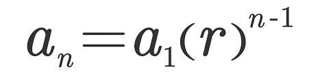

Chapter 7 - Exponents and Exponential Functions
7.1 - Multiplication Property of Exponents

Resources:
Kuta Worksheet #1
Multiplication Worksheets
Multiple Worksheets
7.2 - Division Property of Exponents
Resources:
Kuta Worksheet
Worksheet #2
Worksheet #3
7.3 - Rational Exponents
Resources:
Kuta Worksheet #1
Kuta Worksheet #2
Advanced Worksheet
Khan Academy Practice
7.1-7.3 Practice
7.5 - Exponential Functions
Notes

- Parent Function: f(x)=a(b)^x
- a is the initial value.
- b is the change
- x is time.
- Exponential Growth Functions:
Equation: f(x)=ab^x; a>0, b>1
Domain, Range: All reals, all positive reals
Intercepts: one y-intercept, no x-intercept unless asymptote is negative
- Exponential Decay Functions:
Equation: f(x)= ab^x, a>0, 0 less than b less than 1
Domain, Range: All reals, all positive reals
Intercepts: one y-intercept, no x-intercept unless asymptote is negative.
- If b=1, that means the equation's linear.
Resources:
Kuta Graphing Worksheet
Simplification & Evaluation Worksheet
Workseet #3
Exponential Growth & Decay
7.6 - Growth and Decay, Transforming Exponential Expressions, and Compound Interest
Notes
- Exponential Growth Equation: y=a(1+r)^t
y represents the final amount
a represents the initial amount
r represents the rate of change expressed as a decimal
t represents the time(In years!)
- Exponential Decay(Depreciation) Equation: y= a(1-r)^t
Same as exponential growth, except there is negative sign.
- Asymptote: An imaginary line which your line approaches but never crosses
- Compound Interest: A = P(1 + r/n)^(nt)
Monthly: 12 times
Quarterly: 4 times
Semi-annually: 2 times
Annually or not stated: 1 time
Resources:
Worksheet #1
Worksheet #2
Compound Interest
Transformations Notes
Transformations
7.6 - Growth and Decay, Transforming Exponential Expressions, and Compound Interest
Notes
- A geometric sequence is a sequence where the starting number isn't zero and you HAVE to multiply to find the next term
- A common ratio is the number you multiply each term with to find the next number
- n is the term number that you want to figure out
- a1 is the 1st term of the sequence
- r is the ratio.
- NEVER JOIN THE LINES
- To find the nth term (term number you want to figure out), for a geometric sequence, use the below formula.

Resources:
Kuta Worksheet
Arithmetic + Geometric Sequence
Worksheet #3
Worksheet #4
Half Life
Notes
- A=p(0.5)^(t/half life time)
- "t" represents the time, "p" represents the initial value.
Resources:
Worksheet #1
Worksheet #2
Worksheet #3
Worksheet #4
Fake Benchmark
HIGHLY RECCOMENDED